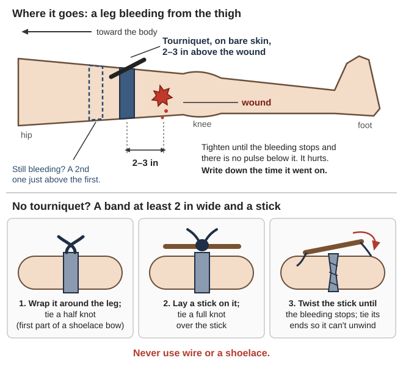
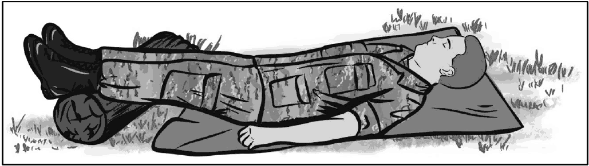
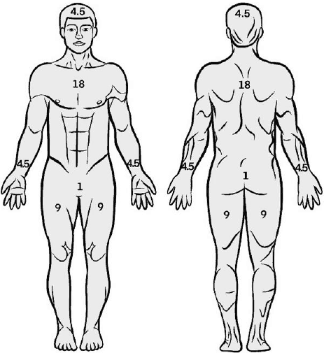
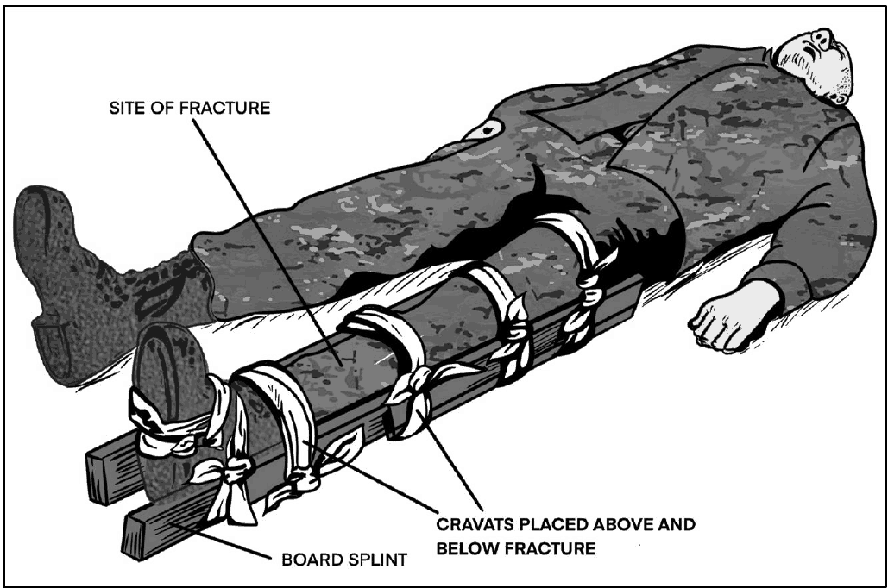
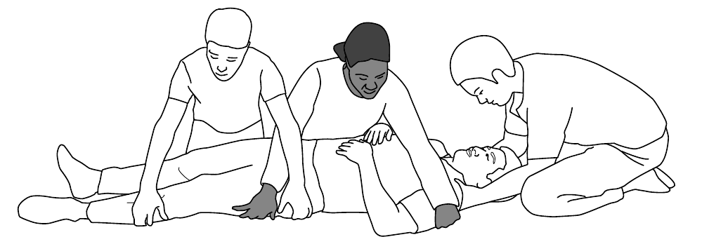
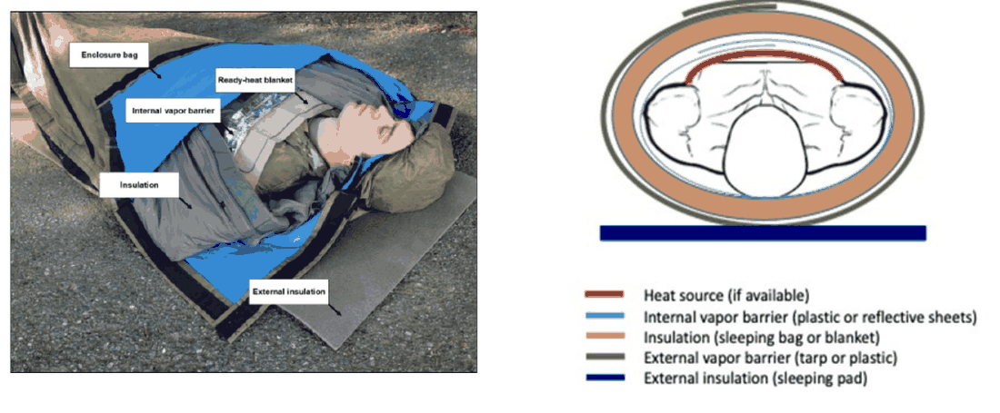

Guides › Health & medicine · Emergency · Index A–Z
Injuries & Illness When No Help Is Coming
What to do when someone is hurt or sick and no ambulance, hospital or doctor is coming — from the first minutes through weeks of nursing. It follows the newest books on the drive: the US Army's 2026 first-aid manual (ATP 4-02.11), the Joint Trauma System (JTS) guidelines for care when evacuation is delayed, and WHO-ICRC Basic Emergency Care. Older books are used only where nothing has changed. The books are in Medical\Field-Care\ (Trauma-Bleeding, Wounds-Burns-Fractures, Nursing-Care, Dental, Childbirth-Newborn), Medical\Manuals-PDF, Medical\Where There Is No Doctor and Manuals\ArmyFieldManuals. Medicines and doses are in the companion guide, Medical — READ ME FIRST.
⚠️ Rules that prevent the worst outcomes
- Make sure whatever hurt them can't hurt you — fire, a falling tree, a downed power line, traffic. Then check the person in order, bleeding first (ATP 4-02.11, p. 52).
- Life-threatening bleeding from an arm or leg: tourniquet FIRST. Heavy bleeding can kill in about 3 minutes (ATP, p. 62). Older books call a tourniquet a "last resort" — that is outdated.
- Never cut, suck, ice or tie off a snakebite (JTS snakebite guideline, p. 27; no ice: ATP, p. 179).
- Never close a dirty or old wound. When in doubt, leave it open (JTS wound guideline, p. 10).
- Heat stroke: cool them first, right now (Emergency War Surgery, p. 428).
- Keep every injured person warm and off the ground, even in summer — cold blood doesn't clot well (ATP, p. 103).
The first look: check in this order
Fix each problem before moving on. The Army calls it MARCH; WHO uses the same idea as ABCDE (ATP, p. 53; WHO-ICRC, p. 49).
| Letter | Check | Do |
|---|---|---|
| M — Massive bleeding | Spurting or pooling blood | Tourniquet or packing (next section) |
| A — Airway | Noisy, gurgling, unconscious | Clear the mouth; recovery position or jaw thrust (ATP, p. 78) |
| R — Respiration | Breathing? Hole in the chest? | Tape plastic over a chest wound; lift it if breathing gets worse (ATP, p. 94; chest seals, p. 88; Occlusive dressing) |
| C — Circulation | Pale, confused, weak wrist pulse (feeling it, WTND ch. 3, p. 4) | Treat for shock (shock position, ATP p. 99) |
| H — Hypothermia, Head | Cold, wet, knocked out | Insulate; watch the head |
Then pain, antibiotics, wounds and splints ("MARCH-PAWS").
Recovery position (unconscious but breathing, no injury suspected): roll them onto the left side, bend the top leg forward, and rest the head on the straight lower arm with the mouth pointing down so vomit drains out (WHO-ICRC, p. 190). If the neck might be hurt, push the jaw forward ("jaw thrust") instead of tilting the head back (p. 49; ATP drawing, p. 78; Jaw thrust), and turn the body as one unit — a "log-roll" (ICRC First Aid, p. 163; WHO-ICRC, p. 188). Recovery position; ATP drawing, p. 79.
 On the side, top leg bent forward, head on the straight lower arm so the mouth drains; only when no injury is suspected (WHO-ICRC, p. 190).
On the side, top leg bent forward, head on the straight lower arm so the mouth drains; only when no injury is suspected (WHO-ICRC, p. 190).
CPR: push hard and fast in the center of the chest, at least 2 inches deep, 100–120 a minute, letting it come all the way back up — 30 pushes, then 2 breaths (ATP, p. 95; CPR). Know its limits:
- When an injured person's heart stops, assume blood loss — CPR can't pump blood that isn't there (ICRC First Aid, p. 119).
- The ICRC advises 5 minutes of CPR when the cause is not an injury, and none for an injured person with obvious signs of death (p. 167).
- With no defibrillator, the best chances are drowning, lightning and very cold people (general practice). Feel a cold person's pulse for a full 60 seconds first (Ship's Medicine Chest, p. 221).
📚 Go deeper: ATP 4-02.11 — the whole MARCH-PAWS sequence with drawings; WHO-ICRC Basic Emergency Care — the ABCDE check for any sick or hurt person.
Stopping life-threatening bleeding, then shock
Tourniquet — arm or leg, blood spurting or pooling (ATP, p. 62):
- Put it 2–3 inches above the wound, directly on the skin.
- Tighten until the bleeding stops and there's no pulse below it. It will hurt badly — that means it's tight enough.
- Still bleeding? Add a second tourniquet just above the first (often needed on the thigh).
- Write down the time it went on (p. 63).
No tourniquet? A band at least 2 inches wide twisted tight with a stick — never wire or a shoelace (FM 4-25.11, p. 48; this tip still holds; stick-and-knot steps, pp. 49–50). Tourniquet; Combat Application Tourniquet.

"Above the wound" means between the wound and the body (a diagram drawn for this guide).Where a tourniquet can't go (groin, armpit, neck — ATP, p. 69): pack the wound. Stuff gauze or clean cloth tightly in, right down to where the blood comes from, press hard at least 3 minutes — sometimes up to 10 — then wrap a pressure bandage over it (ATP, p. 64; JTS wound guideline, p. 5; direct pressure, WHO-ICRC p. 169; pressure dressing, FM 4-25.11 p. 45; Hemostatic agent). The hand or foot beyond should stay warm and pink (ATP, p. 65).
- Never pack a chest or belly wound (p. 64).
- Leave stuck objects in. Pad bulky cloth around the stick or shard and bandage it so it can't move (p. 65).
Tourniquet timing when no surgeon is coming (JTS Prolonged Casualty Care, p. 18):
- Under 2 hours is the safe window; after about 6 hours the limb is probably lost.
- If packing plus a pressure bandage can hold the bleeding, loosen ("convert") the tourniquet before 2 hours and watch for bleeding. Leave it in place, loose, ready to re-tighten (rule of thumb).
- Never remove a tourniquet that has been on more than 6 hours.
- (ATP says only medics remove them — but it assumes a hospital is coming.)
Shock. An injured person who is confused (no head injury) with a weak or missing wrist pulse has lost a lot of blood and will die without fast action (ATP, p. 98). Stop the bleeding, lay them flat with feet raised (after any broken leg is splinted), loosen tight clothing, and insulate them above and below (p. 100; shock position, p. 99; Shock). Drinks: standard first aid says nothing by mouth (same page), because surgery may come soon. With no help coming, that changes: if they're awake and can swallow, give sips of electrolyte (rehydration) drink, not plain water, which can drop the body's salt dangerously (JTS, p. 18).

Flat on the back, feet raised a little above the heart, a pad between them and the ground (ATP, p. 99).📚 Go deeper: ATP 4-02.11, ch. 4 — tourniquets, packing and pressure bandages step by step; JTS Prolonged Casualty Care — hour-by-hour care when evacuation is delayed.
Burns
First aid (ATP, pp. 131–132):
- Stop the burning. Put out flames. Cut clothing away around the burn, leaving cloth that is stuck to the skin.
- Small burn: clean cool water right away, not ice, for no more than 20 minutes. Never put ice, grease, fat, herbs or dung on a burn (WTND, p. 96).
- Chemical: brush off powder, then flush with lots of running water. Not in a tub — it chills them and spreads the chemical.
- Electrical: shut off the power, or drag them clear with dry rope, cloth or wood.
- Big burns: don't soak them. Keep them warm and off the ground — they chill fast in any weather.
How big? Their own palm is about 1%. Rule of nines: head 9%, each arm 9%, each leg 18%, front of trunk 18%, back 18%. Don't count red skin without blisters (ATP, p. 130; adult chart in WHO-ICRC, p. 197, child chart on p. 198). Rule of nines; adult and child charts, JTS p. 53; photos of 1st-, 2nd- and 3rd-degree burns, JTS burn guideline p. 5; Burn.

Add front and back: head 9%, each arm 9%, each leg 18%, front of the trunk 18%, back 18% (ATP, p. 130).Fluids without an IV (JTS burn guideline, pp. 6–8):
- Burns over 20% cause shock in the first 1–2 days. With "coached" drinking on a schedule, burns up to about 30% can be treated by mouth.
- Rehydration drink, not plain water: 1 liter clean water + 6 level teaspoons sugar + ½ level teaspoon salt.
- Adult rate: burn % × 10 = ml an hour (30% burn ≈ 300 ml an hour).
- Enough? An adult passes more than 180 ml of urine every 6 hours (30–50 ml an hour).
- Can't keep it down? Last resort: the same drink as an enema, up to 500 ml an hour (p. 7).
Dressings (p. 9): leave unbroken blisters alone; cover with clean, dry gauze (wet dressings chill). For longer care, once a day wash gently with mild soap and clean water, remove loose dead skin, apply silver sulfadiazine cream (not on babies under 2 months, eyelids or lips) or a thin layer of honey (WTND, p. 96), re-cover (washing and covering a burn, ICRC First Aid p. 217). Give pain medicine first.
📚 Go deeper: JTS Burn Wound Management — sizing, drinking schedules, urine targets, daily care; WHO Surgical Care at the District Hospital — burns in a small hospital.
Wounds and infection when there's no hospital
Wash it out with lots of water (JTS wound guideline, pp. 4–5):
- Cleanest water you have. Not safe to drink? Boil 3 minutes, cool to body temperature.
- 1–3 liters for a small cut, 4–8 for a medium or dirty wound, 9 or more for a large dirty one. A syringe, or a bottle with holes poked in the cap, gives the right pressure (washing a dirty wound, ICRC War Surgery p. 218).
- Washing the whole person lowers infection too. Iodine, alcohol or antibiotic in the water does not help.
Close it or leave it open? (p. 10)
- Only close a cut that is clean, under 12 hours old (24 on the face or scalp) and closes without pulling.
- Leave everything else open under a clean dressing. If it stays clean, close it 3–7 days later, or let it heal from the bottom up. Red Cross surgeons do the same (ICRC War Surgery, p. 219).
- A closed wound that turns red, hot and full of pus: reopen it and let the pus out (p. 11).
Bites (dog, cat, human): scrub at once with soap and water, let them heal open, think about rabies; most need antibiotics (p. 12). Tetanus: check vaccination with every wound (p. 10) — and get boosters now (general practice).
When infection spreads:
- In the wound: worsening pain, spreading redness, pus (p. 11; Cellulitis; Abscess). Draw a pen line around the red edge; if it spreads past the line on antibiotics, the treatment is failing (drug choices: MSF, p. 145).
- Whole body (sepsis): fever or unusually low temperature, pulse over 90, breathing over 20 a minute, confusion, less urine. Low blood pressure comes late — don't wait for it (JTS sepsis guideline, p. 5).
Sterilizing instruments — scrub off blood and dirt first (JTS, pp. 17–18):
| Method | How | Result |
|---|---|---|
| Pressure cooker | Tools on a rack above the water, 60 minutes once it vents | Sterile |
| Oven | 338 °F (170 °C) 1 hour, or 320 °F (160 °C) 2 hours | Sterile |
| Plain bleach | Soak undiluted 5 minutes, rinse | Disinfected |
| Boiling | Last resort | Clean, NOT sterile (WHO, p. 115) |
📚 Go deeper: JTS Acute Traumatic Wound Management — washing, closing, bites, sterilizing; ICRC War Surgery Vol 1 — dirty wounds and delayed closure; WTND — skin infections — plain-language pictures.
Broken bones, sprains, spine and head
Splinting (WHO-ICRC, p. 191; arm slings: ATP pp. 141–143, Sling):
- Take off rings and jewelry.
- Before and after, check beyond the injury: pulse, color, feeling, movement.
- Pad the splint and bony points; reach past the joint above and the joint below (board and improvised splints, ATP pp. 146–148; the good leg as a splint, p. 149).
- Deformed, no pulse (cold, pale): gently straighten it. Deformed with a good pulse: don't force it.

The boards reach past the joint above (knee) and the joint below (ankle), with ties above and below the break (ATP, p. 147).Cast too tight from swelling: split it and rewrap with an elastic bandage (Hospital Corpsman, p. 96; cutting a cast, WHO Surgical Care p. 393). Splint.
Sprains — treat like a break (WTND, p. 102): keep it still, wrap firmly from the toes up (loosen briefly every hour or two), keep it raised. Cold wet cloths 20–30 minutes every hour for a day or two, then warm soaks. Never rub or massage it. A bad sprain takes 3–4 weeks.
Dislocated shoulder — the longer you wait, the harder it gets (WTND, p. 101): lay them face down on a table, arm hanging over the edge. Pull steadily down 15–20 minutes, or hang 5–10 kg from the arm (start with 5). Then bind the arm to the body for a week to a month; no lifting with it for a month. Other methods: WHO Surgical Care, p. 403 (drawings, p. 404). Dislocated shoulder.
Spine: suspect it with numbness, weakness, or a head injury. Keep them flat; log-roll to check the back or let them vomit. A hard board is only for moving them — hours on one cause pressure sores (WHO-ICRC, pp. 55, 189; lifting without bending the spine, WTND p. 100; Spinal board).

Log-roll: the person at the head keeps it in line and calls "1–2–3"; everyone turns the body together as one unit (WHO-ICRC, p. 188).Head injury danger signs: unequal pupils (WTND ch. 3, p. 5; Anisocoria), weakness on one side, seizures, vomiting, worsening confusion, clear fluid or blood from the nose or ears (ATP, p. 121). With no neck injury and no shock, raise the head of the bed about 30°. During a seizure, put nothing in the mouth (WHO-ICRC, p. 33).
📚 Go deeper: ATP 4-02.11, ch. 13 — splints from improvised materials; WHO Surgical Care — setting fractures, traction, plaster.
Rattlesnakes, spiders and stings
Rattlesnakes (the Northern Pacific rattlesnake; how to tell a pit viper, ATP p. 176), yellow jackets, ticks (western black-legged tick) and poison oak are normal hazards along the Rogue (BLM, p. 4).
Rattlesnake bite — DO (JTS snakebite guideline, p. 16; ATP, p. 179):
- Keep them calm and still. Take off rings, watches and tight clothing.
- Loosely splint the limb, a little below heart level. Wash the bite gently.
- Get them to antivenom as fast as possible, even if they have to walk — it's the only real treatment.
DON'T cut, suck, shock, burn, use chemicals, ice, or tie on a band or tourniquet, or use "venom extractor" kits — "outdated interventions that should not be performed" (p. 27; ice: ATP, p. 179). If a band is already on, don't rip it off: people can collapse when it comes off. Remove it with them lying down, ready to treat shock (p. 16).
Without antivenom, expect permanent damage or death, and weeks of nursing (p. 27).
Black widow (Western black widow; venomous spiders and other biters, ATP p. 180): shiny black or brown, usually a red or yellow mark. Lives in woodpiles and sheds; bites often happen in bed in fall and early winter. Painful cramps spread from the bite within 15–60 minutes; the belly can go board-hard. Death or lasting harm is extremely unlikely — pain medicine, wound care, tetanus check, no routine antibiotics (JTS spider guideline, pp. 4–5). Brown recluses don't live in western Oregon (general practice); "spider bite" sores are often abscesses (p. 5).
📚 Go deeper: JTS Snakebite Envenomation (2026) — first steps and what not to do (Appendix F: North America); JTS Spider and Scorpion Envenomation — widow and recluse bites.
Heat and cold in the Valley
Heat. Grants Pass has hit 108 °F (Josephine soil survey, p. 5), — and summer is when wood gets cut and fires get fought.
| Heat exhaustion | Heat stroke — emergency | |
|---|---|---|
| Looks like | Heavy sweat, pale, faint, cramps | Confused, odd behavior, collapse — may still sweat |
| Do | Shade, lie down, legs up, sip electrolyte drink (ATP, p. 189) | Cool first: into cold water (creek, tub), or wet sheets and hard fanning (ATP, p. 190) |
Fast cooling cuts heat-stroke deaths from about 50% to 5%; stop at about 101 °F (38.3 °C) so they don't get too cold (Emergency War Surgery, p. 428). ATP lists "hot, dry skin," but people who collapse from hard work often still sweat — don't wait for dry skin (general practice). Too much plain water lowers blood salt and also causes confusion (ATP, p. 190). Heat stroke.
Cold. Cave Junction winters average 40 °F, nights near freezing, with about 85% of the rain October to March (soil survey, p. 5). Wet makes hypothermia possible even in mild weather (ATP, p. 103).
- Mild (shivering, alert): wet clothes off, wrap them including the head, warm sweet drinks (Ship's Medicine Chest, p. 221).
- Severe (not shivering, drowsy): lying flat, handled gently. No walking, no hot bath, nothing by mouth. Wrapped heat on the chest and armpits, never on bare skin (same page; JTS hypothermia guideline, p. 5).
- No dry clothes? Wrap them in plastic sheeting (a vapor barrier) under the blankets, with insulation underneath (JTS, p. 5; improvised wrap, p. 7).

From the outside in: sleeping pad underneath, tarp or plastic, sleeping bag or blankets, plastic sheet; heat, if you have it, on the chest and never on bare skin (JTS, p. 7).📚 Go deeper: Ship's Medicine Chest, p. 221 — mild to severe hypothermia; JTS Hypothermia Prevention — keeping hurt people warm; ATP, ch. 17 — heat illness.
Teeth: pain and emergencies
WHO's protocols for non-dentists (WHO Oral Health, p. 56):
- Knocked-out adult tooth: rinse it and push it back in within 1 hour, without touching the root. Where There Is No Dentist allows up to 12 hours, but sooner is far better. Wash with saline, milk or clean water; don't scrape the root; don't replace a baby tooth (p. 107; pushing it back and waxing it in place, p. 108; Dental avulsion).
- Loosened tooth: gently push it back into place.
- Broken tooth: temporary filling — zinc oxide mixed with oil of cloves (p. 156; the instruments, p. 155; Zinc oxide eugenol).
- Infection: antibiotics, pain relief, and drain any abscess.
- Don't put medicines directly on the tooth or gum.
Abscess signs: constant pain (even at night), the tooth feels "long" or loose, a gum boil, a swollen gum or face. Swelling pressing on the throat, or fever, is an emergency (p. 103; penicillin doses p. 104). Bring swelling down before pulling a tooth — the numbing shot won't work in a swollen jaw. Dental abscess.
📚 Go deeper: Where There Is No Dentist — abscesses, pulling teeth, fillings; WHO AFRO protocols — urgent-care flowcharts (images only).
Nursing a bedridden person for days and weeks
From the JTS nursing guideline (CPG 70):
- Turn them at least every 2 hours (hourly on a hard surface). Pad heels, elbows, tailbone and the back of the head; pillows between knees and ankles (p. 10). Pressure sores.
- Head up about 30° if unconscious — it lowers pneumonia risk (same page).
- A red patch that doesn't fade when pressed is a sore starting: circle it, keep weight off it (p. 11; where sores form, WTND ch. 15, p. 22).
- Mouth care: brush every 12 hours; unconscious, wipe with moist gauze every 4 hours (same page).
- Washing and toileting: bed bath daily; check every 2 hours for soiling; dry skin folds (p. 12).
- Food and fluids: 5–6 small high-protein meals a day. Judge fluids by urine — little or dark means more to drink (p. 9).
- Moving: sit up, then the bed edge, a chair, short walks with help; move every joint at least every 8 hours — this also helps prevent leg clots (pp. 13–14).
Diarrhea (WHO Treatment of Diarrhoea; signs of dehydration: the skin-pinch test, WTND ch. 13, p. 1):
- After each loose stool: under 2 years 50–100 ml; ages 2–10, 100–200 ml; older, as much as they want (p. 14). Dehydrated: about 75 ml per kg over 4 hours (p. 15).
- Small children: a teaspoon every 1–2 minutes, not a bottle (p. 16).
- Children get zinc 10–20 mg a day for 10–14 days; no anti-diarrhea drugs under age 5 (p. 9).
- Recipes differ: WTND uses 8 level teaspoons sugar + ½ salt per liter (WTND ch. 13, p. 2); WHO, 6 + ½. Both work. Oral rehydration.
Childbirth has its own books in Medical\Field-Care\Childbirth-Newborn. Heavy bleeding after birth: rub the womb until it's hard, baby to the breast, help her urinate, check the placenta came out whole (A Book for Midwives, ch. 13).
📚 Go deeper: JTS Nursing Interventions — turning, mouth care, bed baths, exercises; WHO Treatment of Diarrhoea — plans A, B and C; WHO Newborn Care — birth step by step.
Knowing when someone can't be saved
Some people will die whatever you do. Seeing it early lets you save those who can, and comfort the dying instead of putting them through useless treatment.
- Many hurt at once: the Red Cross sorts people into urgent (simple care now saves them), serious (can wait a little), minor, and not to be treated or moved — injuries care can't help, and the dying (ICRC First Aid, p. 125; Triage).
- No CPR on an injured person with obvious signs of death (p. 167).
- A newborn with no heartbeat after 10 minutes of good breaths has died (WHO, p. 152).
- Snakebite without antivenom, very large burns, sepsis that keeps worsening, a limb under a tourniquet past 6 hours — expect to lose some lives and limbs; do what you can, but not at the cost of those who can live (rule of thumb).
Caring for the dying (Where Women Have No Doctor, ch. 17, p. 28): keep them comfortable and free of pain, have family sit with them, let them make their own decisions and talk about death if they want — pretending they aren't dying doesn't help. Then look after the carers (Community guide).
📚 Go deeper: ICRC First Aid in Armed Conflicts — triage; ICRC War Surgery — sorting casualties with few resources.
The kit to build now
The Army's first-aid kit (ATP, p. 231) — one per adult (rule of thumb): 2 tourniquets, 2 clotting (hemostatic) gauzes, 2 compressed gauzes, 2 gauze rolls, a triangular bandage, a vented chest seal (ATP, p. 88), 2 eye shields, 2 pairs of gloves, a safety cutter, tape and a marker. First aid kit.
For the household (rule of thumb unless a page is given):
- An irrigation syringe; a pressure cooker with a rack kept for instruments (JTS, p. 18)
- Tweezers, scissors, a thermometer, elastic bandages, splints, clean cloth
- Salt, sugar and level measuring spoons for rehydration drink
- Silver sulfadiazine cream (JTS, p. 9); zinc oxide and oil of cloves (WTNDentist, p. 156)
- Medicines from the WTND kit list — doses and storage in the Medical guide
- A notebook for times, pulses, urine and doses
Now, while you can: practice a one-handed tourniquet on yourself (ATP, p. 62), update everyone's tetanus shots, and take a first-aid or CERT class (general practice).
📚 Go deeper: ATP 4-02.11, Appendix A — kit lists; WTND — the medicine kit — home and village kits.
If this goes wrong
| What you see | What to do |
|---|---|
| Still bleeding with a tourniquet on | Tighten; add a second one just above (ATP, p. 62) |
| Hand or foot cold, pale or numb beyond a bandage or cast | Too tight — loosen or split it (ATP, pp. 64–65) |
| Redness spreading past your pen line | Antibiotic failing — rethink the drug (MSF, p. 145) |
| Burned person passing little urine | Raise the drinking rate by a quarter every 1–2 hours (JTS, p. 8) |
| Pulse over 90, fast breathing, confused | Sepsis — treat now (JTS, p. 5) |
📚 Go deeper: JTS Prolonged Casualty Care — what to recheck while you wait; WHO-ICRC Basic Emergency Care — the ABCDE check, to repeat often; JTS Nursing Interventions — day-to-day checks on a bedridden patient.
⚠️ Old advice in the library to ignore
| Old book | What it says | Do this instead |
|---|---|---|
| FM 4-25.11 (2002), p. 48 | Tourniquet only after a pressure dressing fails | Tourniquet first for life-threatening limb bleeding (ATP, p. 62) |
| FM 21-76, p. 38 | Snakebite: band, suction or squeezing, and small cuts if help is far | No band, cuts or suction (JTS, p. 27) |
| FM 3-05.70, p. 56 | Band, cuts, suction cup for 30 minutes | Same: no band, cuts or suction |
| FM 4-25.11, p. 136 | Constricting bands near the bite | No bands of any kind (JTS, p. 16) |
| ST 31-91B (1982), p. 114 | Incision and suction | Never cut or suck |
| Hospital Corpsman (2000), p. 225 | "Lymphatic constriction" band, suction extractors | No bands, no extractors |
| WHO Surgical Care (2003), p. 90 | Pressure bandage on snakebites; no walking | For rattlesnakes: no constricting bandage; walking to antivenom is acceptable (JTS, p. 16) |
| Where There Is No Dentist, p. 97 | 30 minutes of boiling sterilizes | Boiling only disinfects (WHO, p. 115) — use a pressure cooker or oven |
Use the 2000 Hospital Corpsman course for nursing and casts, but ATP 4-02.11 for first aid and CPR.
📚 Go deeper: JTS Snakebite Envenomation, p. 27 — outdated snakebite treatments; ATP 4-02.11, p. 62 — current tourniquet rules.
Pictures & diagrams
Look before you try it. 🖼️ = drawings in the books on this drive; 📷 = photos in the offline Wikipedia.
The first look: airway, pulse, CPR
- Recovery position — ATP, p. 79; WHO-ICRC, p. 190; Recovery position
- Head-tilt and jaw thrust — ATP, pp. 77–78; Jaw thrust
- Log-roll for a possible spine injury — WHO-ICRC, p. 188; ICRC First Aid, p. 163
- Where the hands go for CPR — Hospital Corpsman, p. 159 (hand position only; depth and rate from ATP above); CPR
- Feeling the wrist pulse — WTND ch. 3, p. 4; ATP, p. 60
- Vented chest seal — ATP, p. 88; Occlusive dressing
Bleeding and shock
- Windlass and ratchet tourniquets — ATP, p. 62; Combat Application Tourniquet
- Improvised stick tourniquet, step by step — FM 4-25.11, pp. 49–50
- Groin, armpit and neck, where a tourniquet can't go — ATP, p. 69
- Direct pressure and a pressure dressing — WHO-ICRC, p. 169; FM 4-25.11, p. 45; Hemostatic agent
- Shock position — ATP, p. 99; Shock
Burns and wounds
- Rule of nines — ATP, p. 130; adult and child, JTS p. 53; child chart, WHO-ICRC p. 198; Rule of nines
- Burn depths — JTS burn guideline, p. 5; Burn
- Washing and covering a burn — ICRC First Aid, p. 217
- Washing out a dirty wound — ICRC War Surgery, p. 218
- Spreading infection — Cellulitis; Abscess
Bones, slings and spine
- Board and improvised splints — ATP, pp. 144–148; Splint
- The good leg as a splint; collarbone — ATP, p. 149
- Arm slings from a shirt, belt or cloth — ATP, pp. 141–143; Sling
- Wrapping a sprained ankle — WTND, p. 102; Sprain
- Setting a dislocated shoulder — WTND, p. 101; WHO Surgical Care, p. 404; Dislocated shoulder
- Keeping the spine straight; lifting someone onto a stretcher — ATP, p. 151; WTND, p. 100; Spinal board
- Unequal pupils after a head injury — WTND ch. 3, p. 5; Anisocoria
Bites, stings, heat and cold
- Telling a pit viper — ATP, pp. 176–177; Northern Pacific rattlesnake
- Marking pain and swelling on a bitten limb — JTS snakebite, p. 17
- Black widow and other biters — ATP, p. 180; Western black widow
- Other local hazards — Yellowjacket; Western black-legged tick; Poison oak
- Hypothermia wrap with a vapor barrier — JTS, p. 7; Hypothermia
Teeth and nursing
- Putting a knocked-out tooth back — Where There Is No Dentist, pp. 107–108; Dental avulsion
- Tooth abscess — Where There Is No Dentist, p. 103; Dental abscess
- Temporary filling kit — Where There Is No Dentist, pp. 155–156; Zinc oxide eugenol
- Where pressure sores form — WTND ch. 15, p. 22; Pressure sores
- Signs of dehydration and the home drink — WTND ch. 13, pp. 1–2; Oral rehydration
Related guides
- Medical — READ ME FIRST — the companion guide: which book for which illness, medicines, doses, expired drugs
- Water Purification — safe water for washing wounds and mixing rehydration drink
- Community, Barter & Keeping Watch — first-aid teams, checking on neighbors, psychological first aid, grief
- Signals & Morse — calling for help when phones are down
- Illinois Valley — Start Here — clinics and hospitals while they exist, wildfire smoke
- Food Security — feeding a household, and a recovering patient, through lean times
- On Foot: backpacking and travel — how much to carry, packs, feet and blisters, water and food on the move, camps, river crossings and safety on the road.
- Floods, Ice Storms & Heat Waves — the first hour of a flood, cleaning up, ice storms, frozen pipes, carbon monoxide, heat waves
- Chronic Illness With No Pharmacy — diabetes, blood pressure, asthma, seizures and other daily medicines when the pharmacy is gone
- Vehicles, Tractors & Heavy Equipment — oil injected under the skin is a surgical emergency, and crush injuries